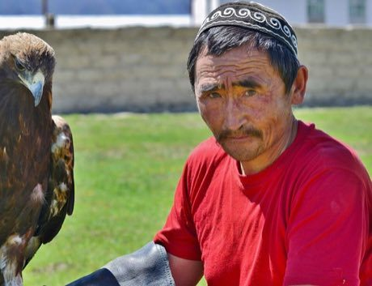

Home / Modern Heritage / Steppe and Arctic
Encyclopedia ID 254
Steppe eagle hunting
Бүркітші · berkutchi


Track a fox on the winter steppe, release the eagle at the right moment and wind and call it back to the glove for a clean return.
Heritage note
Part of the living heritage of Kazakhstan. Animals are partners in this tradition; good care and local rules always come first.
Origins
Usually placed in the era of Modern Heritage (1800 to today), although its exact origins are uncertain, within the cultural world of Steppe and Arctic.
Sources
Related entries

Mheibes
Iraq · Street and playground games
Ger raising
Mongolia · Puzzles and mind games
Kok-boru
Kyrgyzstan +3 · Sports with animal partnersPilolo
Ghana · Street and playground gamesLambs and Tigers
India · Board and table gamesKokpar
Kazakhstan · Street and playground games